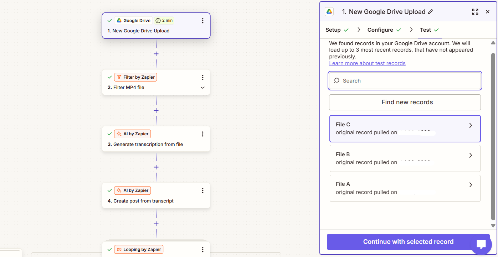
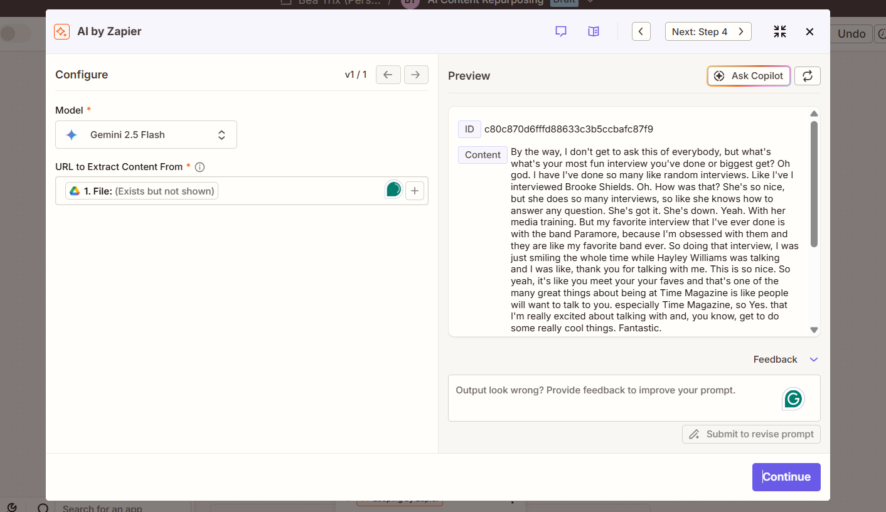
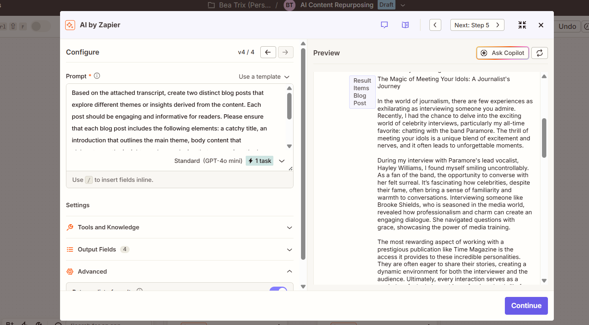
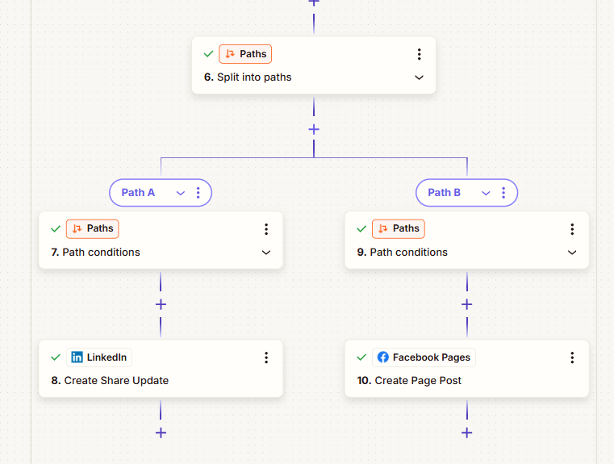
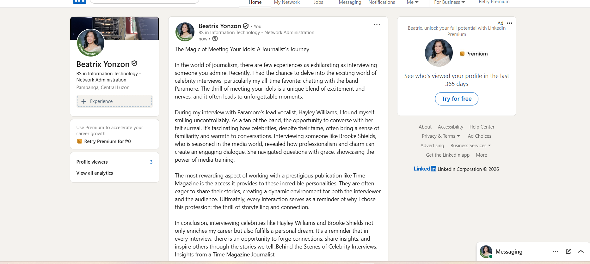

AI Multi-Platform Content Automation
An AI-powered content marketing workflow that converts uploaded audio or video into optimized social media posts. The system automatically transcribes content, generates platform-specific captions, and publishes them directly to LinkedIn and Facebook.
Overview
This workflow automates content repurposing from a single uploaded recording. Using AI transcription and content generation, it creates optimized social media posts tailored for different platforms, eliminating repetitive manual work while maintaining consistent brand messaging.
Project Information
Automation Developer
AI Workflow Engineer
Content Marketing Automation
Social Media Workflow
Technologies & Tools
Challenges & Solutions
Repurposing Long-Form Content
Challenge: Creating separate social media posts for multiple platforms required repetitive manual editing and formatting.
Solution: AI automatically converts transcripts into concise, platform-optimized content for each destination.
Platform-Specific Content Formatting
Challenge: Each social media platform requires different formatting and publishing logic.
Solution: Zapier Paths route generated content into dedicated publishing workflows for LinkedIn and Facebook.
Automating Content Distribution
Challenge: Publishing the same content manually across multiple channels was time-consuming.
Solution: Integrated APIs automatically publish approved AI-generated content immediately after processing.
Architecture & System Design

Content creators upload audio or video through a Google Drive upload.

OpenAI converts uploaded media into an editable transcript.

AI rewrites the transcript into engaging social media posts.

Zapier Paths determine which platforms receive each version of the content.

Posts are automatically published to LinkedIn and Facebook Pages.